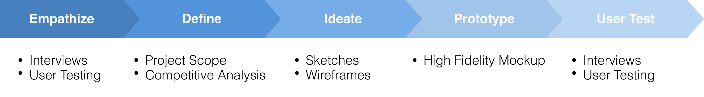
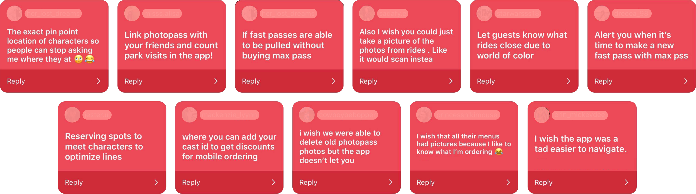
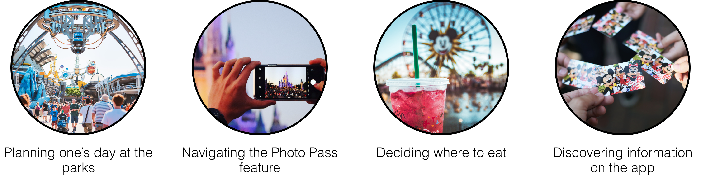
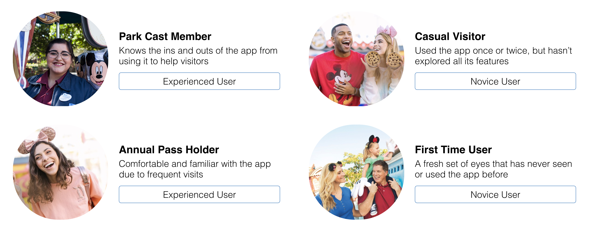
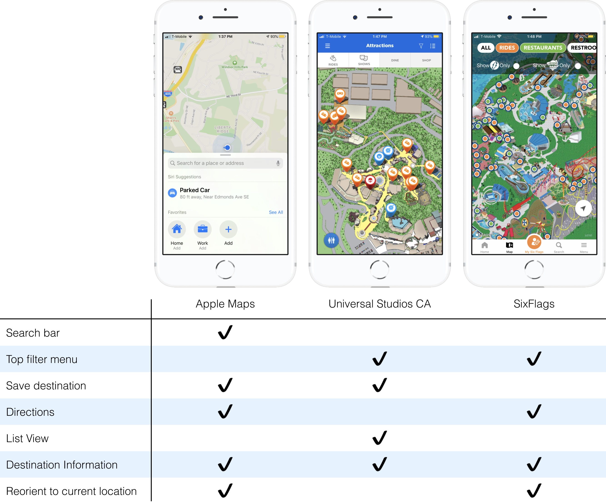
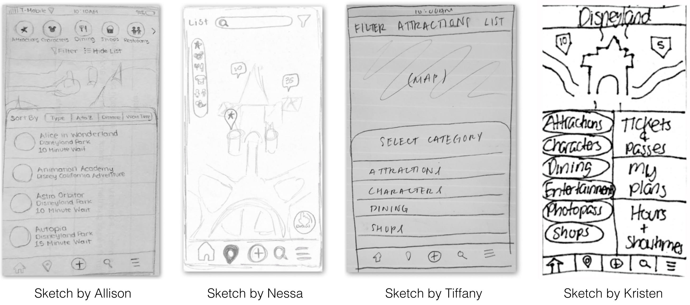
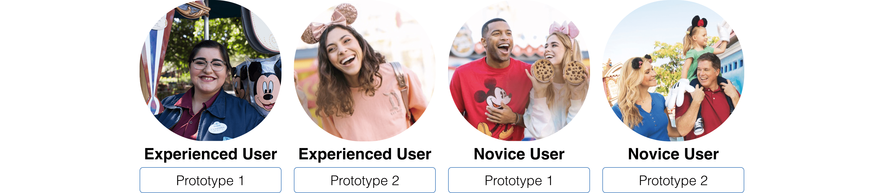
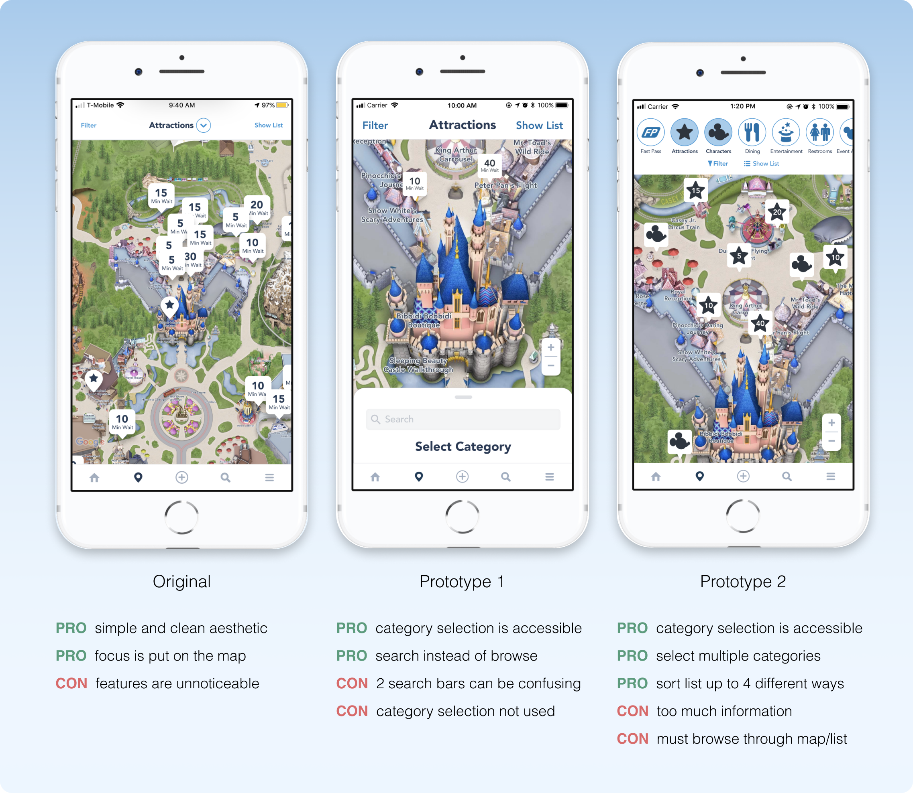

DISNEYLAND iOS REDESIGN
—Mobile App for California Park Visitors
PROJECT TYPE
Design course
Team project
RESPONSIBILITIES
2 Interviews
Competitive Analysis
Prototype #2
TEAMMATES
Kristen, Nessa, Tiffany
DURATION
3 weeks
PROBLEM
The Disneyland app was released to make park visits even more magical!
With the app, you can buy tickets, check wait times, locate favorite
characters, make dining plans, and much more.
While these features
are useful in theory, my team—as park visitors and users of the app—have
personally experienced confusion and frustration trying to navigate the app.
We want to redesign the app so Disneyland’s 51,000 daily park visitors
have easier and more delightful app experiences so they can fully enjoy
their time at the happiest place on Earth!
PROJECT PROCESS
RESEARCH
We started by identifying general pain points to further explore during our interviews and usability testing. Our teammate Kristen, a cast member at Disneyland, reached out on Instagram to gather thoughts on the app from her followers:
In addition to collecting these responses, we each performed a deep dive into the app to uncover confusing components. Through all these explorations, we identified four major pain points:
INTERVIEWS
As Disneyland attracts thousands of visitors every day, there's a wide range of expertise when it comes to the app. We wanted to represent this diversity in our interview participants, which is why we decided on these four main users:
As we had limited time for this project, each team member interviewed
one of the four main users. Our chosen participants came from all walks
of life, aging 20 to 28, but our selection may be limited because we
didn't explicitly consider tech saviness, which may have influenced one’s
app experience. I interviewed someone who hadn’t been to the parks since
the app was released, so I collected insights on how a first time user
familiarizes themself with the app!
The interview was semi-structured with open-ended questions and a user
testing portion. We started with demographic questions to learn about
their background and experience with the app and Disneyland overall.
For the user testing, participants were asked to think aloud while they
completed 4 tasks—each one highlighting one of the 4 major pain points.

example—this task provided insight on how people use the app to plan their day in the park
INTERVIEW RESULTS
After conducting our interviews, we found that users repeatedly struggled when tasks involved the map page, particularly discovering the useful features behind the map's default settings. Specifically the Filter, Category Selection, and Show List features went unnoticed.

As a result of missing these features, users found the map's information
lacking and navigated away to the search page. While they could insert
any key word, the search feature has its limitations for what information
it brings up. For example, my interviewee struggled to locate Elsa for one
of the user testing tasks. On the map page, he didn't notice the dropdown
to change the category from Attractions to Characters, so he went to the
search page to type in Elsa. However, character information is only
available on the map page, so his search failed.
Furthermore, Tiffany pointed out that the map allows users to visualize
the locations of multiple landmarks, as well as browse a list of ones for
those who don’t have something specific to search for. For these reasons,
we see the map's usefulness and potential to have strong impact for users,
which is why our focus will be to make the map page’s features—filter,
category selection, list view—more easily discoverable.
COMPETITIVE ANALYSIS
We examined how other apps handle their map pages and relevant features, especially how easily landmark categories and filters can be accessed. I headed the competitive analysis of the Universal Studios app.
After we tried all of their features, I summarized our findings into key takeaways that we incorporated during our ideation phase:
Apple Maps functionalities are clearly labed and easily discoverable! It provides flexibility and efficiency by giving users the option to either search or browse for their destination.
Universal Studios makes adding and removing categories to the map and list view easily accessible and intuitive with the top bar.
Six Flags makes adding and removing categories to the map and list view easily accessible and intuitive with the top bar. However it is restrictive in regards to accessing detailed information from the map view.
SKETCHES
Incorporating our user testing findings and competitive analysis insights, each team member sketched their ideal redesign for the map page with a focus on discoverability:
Here are the main features of our sketches:
Allison—Row of category icons are horizontally scrollable (inspired by SixFlags and Instagram). Center Filter and Show List and add their respective icons. List view is sortable.
Nessa—Category icons are laid out in a column. Search function is added to the top bar. Add Draw function to select map regions.
Tiffany—Categories are listed in a pull-up panel. Increase text size for Filter and Show List.
Kristen—Categories are listed in left column. Other important information in right column. Users can easily access their frequently used items.
After discussing the strengths and weaknesses of our sketches, we further developed two features of our sketches that best help users discover the map's features—my category icons and sortable list & Tiffany’s pull-up panel. As a result, we developed two distinct high fidelity prototypes in Figma.
HIGH FIDELITY PROTOTYPE 1
The first prototype was headed by Tiffany and Nessa. It maintains the
simple aesthetic and layout of the original design, but adds a bottom
pull-up panel inspired by Apple Maps to make Category Selection more noticeable.
In this design, the panel slides up when the user first navigates to the
map page and will only collapse once a category is selected. This is done
intentionally to make users aware of the available categories, since many
users didn't know there were options other than Attractions. Additionally,
the size and weight of the Filter and Show List buttons were increased due
to our interview participants failing to notice them during testing.

The panel slides up when the user first navigates to the map page making them aware of the different categories. It will only collapse once they select a category.

Users can slide the panel up to change the category or use the panel's search function by clicking the search bar.
And the most distinct aspect of this prototype was the inclusion of a search bar in the pull-up panel. We noticed that some interview participants relied heavily on the search function to find characters, look up ride times, find restaurants, etc. We opted to make this popular feature more accessible but still unobtrusive by placing it in the categories panel. With this feature, users who are looking for something specific can quickly obtain the information and carry on with their Disneyland trip instead of navigating between the map and search page.
HIGH FIDELITY PROTOTYPE 2
Our second prototype was headed by myself and Nessa! It aims to let
users select and sort the information they most care about by improving
discoverability and efficiency.
In this design, I made the ability to
change categories easily discoverable by replacing
the dropdown with a row of category icons. Users can horizontally scroll
to view additional categories and this functionality is made apparent by
having the rightmost icon halfway on the page. When users click an icon,
it highlights blue to show that the category is active and the respective
landmark pins populate the map. Additionally, I positioned Filter and
Show List centered below the row of icons to increase their visibility.

Users can scroll through the row of category icons and select ones they want to view on the map by clicking their icon. Multiple categories can be selected.

When "Show List" is clicked, a panel slides up with list items arranged alphabetically by default. With the "Sort By" menu, users can change how the list is sorted.
When users click Show List, a panel slides up from the bottom of the
page containing the list. In the original design, the list is ordered
alphabetically which doesn’t cater to what users care about (e.g. wait
time and distance). My solution was to add a sort feature that allows
users to sort the list (i.e. A to Z, Category, Distance, Wait Time).
In addition to changing categories, we decided to allow users to have
multiple categories active at once. This saves users time by not having
to go back and forth between categories. Instead they can look at all the
information they need at once! And if the map becomes overwhelming with
so many pins, they can simply reduce the number of active categories.
USER TESTING
The overall goal of our user testing was to answer these two questions:
Are the map page's features—filter, category selection, list view—easily discoverable?
How effective are the new features (search in prototype 1 & sort in prototype 2)?
Due to limited time, we used a between-subjects design with 4 new participants. In other words, both prototypes were tested by an experienced and novice user. I tested a novice user with the prototype I created—prototype 2!
Similar to our initial interview, we started with demographic questions to understand their background and experience with the app and Disneyland overall. Participants were asked to think aloud while they completed 2 tasks—each one designed to have participants use the map's features beyond the default settings. For example, one of our tasks was to find Elsa—can you tell we LOVE Elsa—because finding character's was a huge pain point in our initial interviews.

example—this task provided insight on how discoverable Category Selection is
USER TESTING RESULTS
Our user testing showed that both prototypes made the map page's features more discoverable, especially for Category Selection—with prototype one's bottom panel and prototype two's scrollable row of icons! However we concluded our best option would be to pursue prototype 2 for the following reasons:
Experienced users were confused why there were 2 search bars in prototype one and wondered how they were different
Users have to know what they want to search to utilize prototype one's search bar, whereas prototype two's sortable list allows efficient browsing
The list's different sorting options let's users sort the list in a way that matters to them (e.g. wait time, distance)!
Selecting multiple categories improves efficiency—don't have to switch between categories & can populate map with all categories they care about
Changing categories is easier in prototype two since the row of icons are always present, while the ability is hidden in prototype one's bottom panel
REFLECTIONS + LESSONS LEARNED
As a HUGE Disney lover, I was super passionate about this project and
wanted this redesign to be the best it could! To make our high fidelity
prototype, I spent so many hours learning Figma so I could make the design
I pictured in my head, and the sleep deprivation was totally worth it!
And to my amazing teammates, I learned so much from them and couldn't
have done it without them—from Nessa's Figma expertise and Kristen's Disney
connections to Tiffany's aesthetic and thoughtfulness.
Most importantly, I learned a lot about understanding the viewpoints of
different users and seeing how experience shapes how one uses the app.
For instance, a cast member who uses the app daily saw different problems
than someone who had never seen the app, which we were able to discover
because we took the time to carefully select our participants and craft
our questions and tasks. So my biggest takeaway is that good interviews
will greatly help you discover important insights!

Check out some other projects: